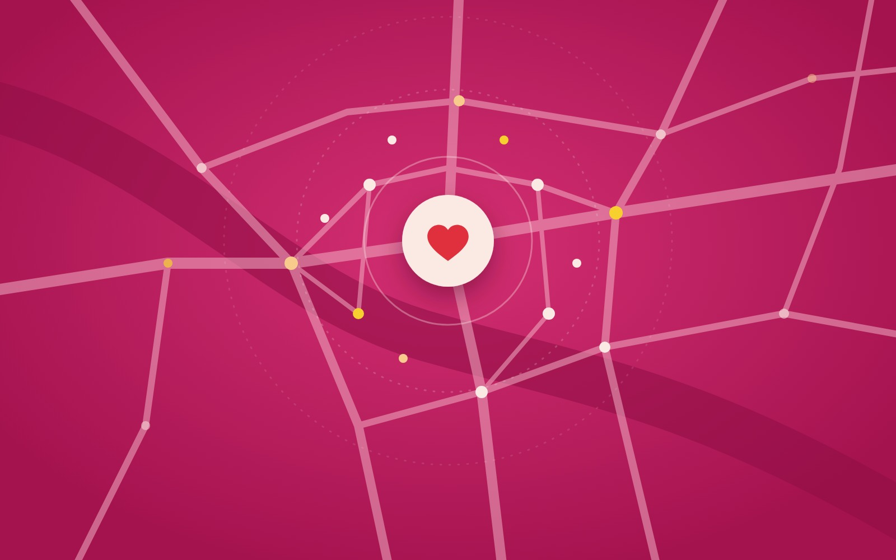
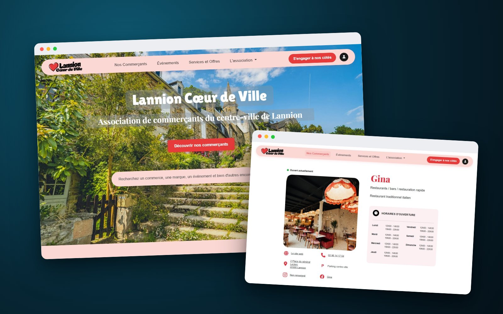
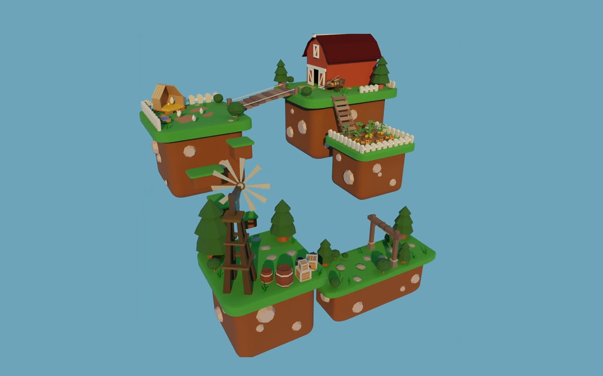
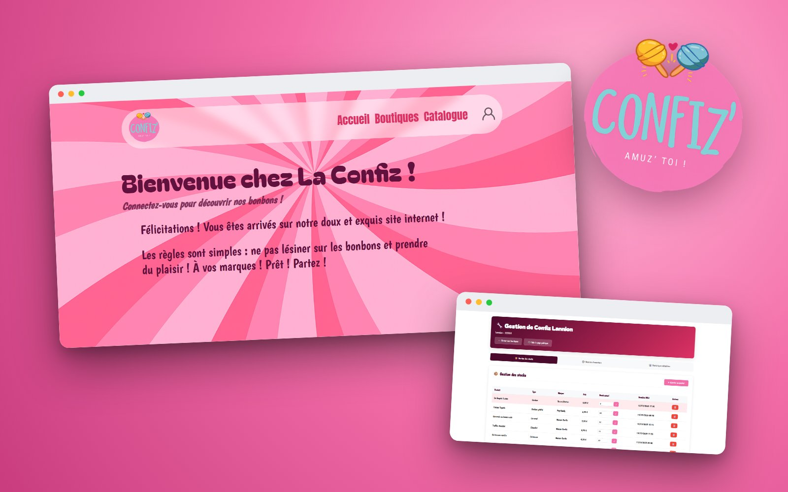

Tous mes projets/ 7

La Guinguette de Léon ↗
Logo, affiche, flyers, carte et signalétique de la guinguette estivale de la roseraie Les Chemins de la Rose.

LCDV · Stratégie ↗
Enquête, audits et recommandations pour l'association des commerçants du centre-ville de Lannion.

LCDV · Identité ↗
Trois pistes de logo, une retenue, et la charte graphique 2026 de l'association.

LCDV · Site web ↗
Wireframes, mockups et prototype codé du nouveau site, avec espaces commerçant et admin.

deMMain ↗
Mini-documentaire de 3 minutes sur le Handibasket, une initiative locale à Lannion.

Diorama 3D ↗
Scène low poly représentant une ferme flottante composée de plusieurs îlots suspendus.

Confiz ↗
Prototype de site web en PHP pour gérer les boutiques et les stocks d'un réseau de confiseries.